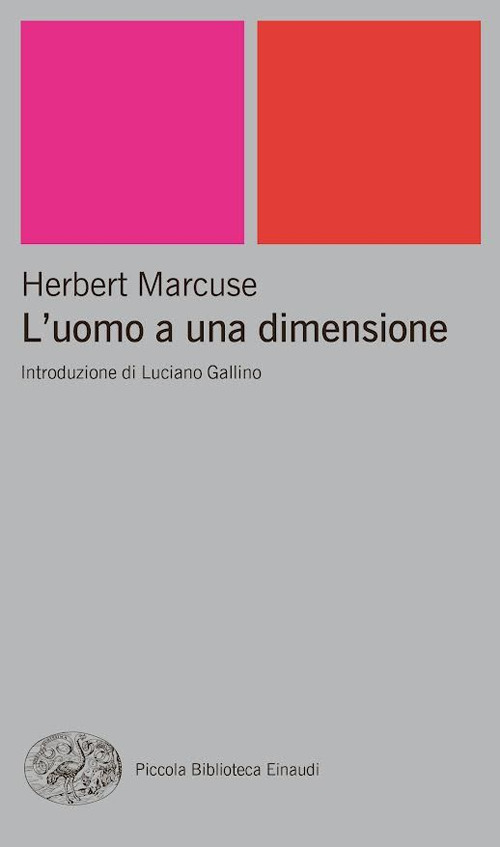
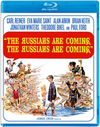

43:06 · 5 OPERE
Venti grammi di cioccolata.
Il filo del discorso
La razione di cioccolata di 1984, ridotta e poi annunciata come un aumento, diventa il filo conduttore di una riflessione sulla memoria e sul linguaggio pubblico durante la pandemia. Il relatore accosta la neolingua di Orwell ai suggerimenti stilistici di Word e interpreta diversi messaggi di protezione reciproca come strumenti di conformismo. Richiama il film The Russians Are Coming, the Russians Are Coming per rappresentare il panico collettivo, poi discute figure morali di riferimento, racconto giornalistico del lutto e dati di mortalità. Nella seconda parte confronta manifesti sanitari e propaganda bellica, evoca Samarcanda e ricorre a Postman per sostenere la propria critica alla riduzione del discorso pubblico a intrattenimento. Conclude difendendo il possesso della memoria. La scheda attribuisce al relatore le analogie politiche e le tesi sanitarie, distinguendo i riferimenti letterari dai dati verificabili: l’invecchiamento, le comorbilità e l’incertezza sul destino di un individuo non dimostrano da soli l’assenza di un rischio nuovo o l’impossibilità di stimare gli effetti della prevenzione.
I libri nel discorso

L’uomo a una dimensione
Identificazione probabile
Copertina: Einaudi, Piccola Biblioteca Einaudi, 1999
Copertina di un’edizione bibliografica dell’opera, con introduzione di Luciano Gallino. La citazione nel video resta probabile; questa edizione non vi è confermata.
Individuo a una dimensione come probabile allusione al saggio di Marcuse; autore non pronunciato nel passo.
Passaggio 9:15 ↗ · Fonti e libro ↗
1984
Copertina: Newton Compton · edizione illustrativa
1984 di Orwell esplicitamente nominato; lettura del passo sulla razione di cioccolata nella prima parte, capitolo5, da circa726secondi.
Passaggio 11:03 ↗ · Fonti e libro ↗
The Russians Are Coming, the Russians Are Coming
Copertina dell’edizione Blu-ray: Film statunitense del 1966, Mirisch / United Artists, regia di Norman Jewison, 126 minuti. Immagine della moderna edizione Blu-ray Kino Lorber, non locandina originale o fotogramma del video.
Confezione autentica Kino Lorber riprodotta nella recensione: la data della riedizione non è la data del film. Il banner della pagina non è usato come copertina.
The Russians Are Coming nominato e trama del sottomarino descritta; il titolo completo ripete la frase due volte.
Passaggio 13:35 ↗ · Fonti e libro ↗Samarcanda
Copertina dell’album che contiene il brano: Canzone inclusa nell’album omonimo Philips del 1977. Immagine dell’album dal sito ufficiale dell’artista, non copertina di un libro o prova di uno specifico singolo posseduto dal relatore.
La scheda riguarda la canzone Samarcanda; l’immagine è dichiarata copertina dell’album omonimo. Non si trascrivono versi né si identifica una origine unica della leggenda senza riscontro.
Samarcanda nominata come canzone italiana che rielabora la storia dell’incontro con la morte; autore identificato nella discografia ufficiale.
Passaggio 34:59 ↗ · Fonti e libro ↗
Divertirsi da morire. Il discorso pubblico nell’era dello spettacolo
Copertina: Luiss University Press · 2021 · prefazione di Matteo Bittanti
Immagine autentica dell’opera, controllata visivamente; non identifica l’edizione usata nel video.
Neil Postman e Amusing Ourselves to Death esplicitamente nominati e consigliati.
Passaggio 37:44 ↗ · Fonti e libro ↗